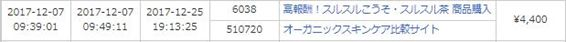

| 狙って稼ぐWeb屋のアフィリエイト: 狙って稼ぎたい方は必見！プロのWeb解析士がアクセス解析を使った倍々ゲームの裏側を包み隠さず大公開！ (鰤子書房) | |
| Web屋コブリコ堂 | |
| (2019) | |
目次
２． Googleアナリティクスで現状を把握し 、 仮説を立てる
はじめに
こんにちは、Web屋コブリコ堂こと、てらだしげきと申します。
私がアクセス解析に興味を持ち始めたのは、サイトアフィリエイトに取り組みはじめて半年くらい経った頃でした。
もともと私はPPCアフィリエイトに取り組んでいましたが、広告費の高騰により利益が出しづらくなってきたこともあり、本格的にサイトアフィリエイトを学ぶために、とあるサイトアフィリエイトの塾に参加することに。
そのアフィリエイト塾で言われたのが、「サイトアフィリ初学者は何をおいても量産ありき」という教えだったんですね。
とにかくサイトをたくさん作りまくりましょう、そうすればそのうちに「当たり」のサイトが出てくる、だから死ぬ気で量産しましょう、これがこの塾の方針でした。
たしかにサイトアフィリエイトに限らず、どんなアフィリエイトでも最初は数をこなさないと成果が出ないというのは私も同感です。
だから私も塾で指導されたとおりにとにかくサイトを量産しました。
正確な数は覚えていませんが、半年間で200サイト以上は作ったと思います。
おかげさまで半年が経過する頃には、月10万円以上稼いでくれるサイトもちらほら現れ始め、「なるほど量産した甲斐があった」と納得してはいたのですが、
しかしその反面で、「いったいいつまでこんな量産生活が続くんだろう・・」「量産ありきはもういい加減うんざりだ！」
そんな苛立ちと焦りが頭の中を渦巻いていたのも事実です。
ちょうどそんな頃です、アクセス解析ツールの存在を知ったのは。
いや、アクセス解析の存在自体は以前から知ってはいましたが、「アクセス解析はプロのWeb業者が使うもの」という認識しかなかったため、特に真剣に学ぼうとは考えていませんでした。
しかし、むやみやたらな量産に嫌気がさし始めていた私は、「アクセス解析を使ってデータを分析すれば、もっと効率的かつ、狙って成約が取れるのではないだろうか？」そう考えるようになったのです。
実際にサイトアフィリエイトにアクセス解析を導入してみたところ、私の読みは見事に的中、自分の狙いどおりに報酬を発生させることが出来るようになりました。
もちろん最初からすべてが上手くいったわけではありませんが、もしアクセス解析を導入しなかったら、いまでも私はあのむやみやたらな量産を繰り返す日々を送っていたかもしれません。
いや、もしかしたらアフィリエイトに失望してやめていたかもしれません。
「なぜもっと早くアクセス解析を使わなかったんだろう・・」
いま思えば不思議でなりませんが、それくらい当時の私は「サイトアフィリは量産することでしか稼げない」と頭に刷り込まれていたのだと思います笑
あなたは、あの頃の私のように遠回りで非効率な方法をいつまでも選択し続けるのは、もう今日限りでやめてくださいね。
サイトアフィリエイトで効率的に稼ぎたいのであれば、いつまでもむやみやたらな量産を続けるのではなく、出来るだけ早いタイミングでアクセス解析を導入することを強くおすすめします。
いまの売上げを2倍、3倍、4倍と増やしていきたいのであればなおさらです。
今回のレポートでは、そんな私のアクセス解析の実例をありのまま公開しておりますので、「アクセス解析を使ってみたいけどよくわからない」、「興味があるけど難しいそう」、「売上げを倍々ゲームで増やしたい」、そんな方にはぜひ参考にしていただけたら幸いです。
※巻末にて、この電子書籍を手にしていただいたあなたに無料プレゼントを用意しております。ぜひ最後までご覧ください。
◆サイトアフィリエイトのテコ入れ実況中継企画とは？
サイトアフィリエイトでサイトをいくつも作っていくと、やがてアクセスが多く集まるサイトや実際に報酬があがるサイトが出てきます。
それらのサイトについては、記事内容の追記・修正をしたり、新たに見つかったキーワードで記事を増やすなどすることで、さらにアクセスが集まり報酬があがるようになります。
この一連の作業を「テコ入れ」と呼びます。
この電子書籍では、私自身のGoogleアナリティクスを使ったテコ入れ手法を公開しております。
具体的には、アクセス解析の実例をリアルタイムの実況中継方式で配信した「GA企画」の内容を、そっくりそのままお見せします。
※GA企画とは、2018年初旬から約５週間にわたり、一部のメルマガ会員のみを対象に公開した限定企画です。
GA企画では、「ありきたりな方法では見つけることの出来ないお宝キーワードに狙いを定め、記事追加した6日後には34000円を叩き出した実例」などを紹介しております。
通常、こういった完全秘密裏なテコ入れの「舞台裏」を覗き見ることはまず不可能です。
ですが、今回それらの舞台裏を包み隠さずすべて暴露しておりますので、ぜひこの機会にアクセス解析の素晴らしさを「実体験」してみてください。
GA実践第一週目
１．効果的なテコ入れ方法とは？
一口にテコ入れと言っても、闇雲にやるだけでは非効率です。やるからにはより効果が期待できるやり方でテコ入れをする必要があります。
効果的なテコ入れをするためには、サイトの現状を「数字で把握する」ことがとても重要で、そのために活用すべきツールがアクセス解析ツールです。
代表的なアクセス解析ツールに、「Google アナリティクス」があります。
⇒ https :// www . google . com / intl / ja / analytics / search . html
今回は、私が手がけている「スルスルこうそ」という案件を扱ったサイトを例に、Googleアナリティクスを活用して、具体的にどのようにテコ入れを行うのか、を報告していきたいと思います。
２．Googleアナリティクスで現状を把握し、仮説を立てる
テコ入れを始めるにあたって必ずやっておくべきこととして、現状を把握したうえで仮説を立てることです。
Googleアナリティクスのデータから現状を把握し、どこにどんなテコ入れをすれば効果が期待できるのか、仮説を立てます。
仮説は、「〇〇にテコ入れをすれば成約が増えるだろう」でもOKですが、最初は「アクセスが増える」などのハードルが低い仮説にするべきだと私は考えています。
なぜなら、アフィリエイトの成約までの流れとしては、
① サイトにアクセスがある
↓
② アフィリエイトリンクがクリックされる
↓
③ 販売ページで成約する
このような流れになりますが、仮に「成約する」という仮説にすると、もし成約に至らなかった場合に何が原因なのかがわかりづらくなります。
なので、今後の仮説・検証を正しく分析するためにも、①のアクセス数や②のクリック数に焦点を合わせた仮説のほうが、原因が探りやすくなります。
むしろ最初は、「テコ入れすることでアクセスが増えるかどうか確認する」くらいの仮説から始めたほうが、結果的に効率的なテコ入れができます。
３．具体的にどのようなテコ入れをすればいいのか？
サイト記事のテコ入れは、より成約につながる可能性が高いところから強化します。
具体的には、
●実際に成約が発生した記事に加筆・修正をする
●アクセスが多く集まっている記事に加筆・修正をする
●アクセスが多く集まっているキーワードで新たに記事を書く
などです。
４．2017年12月の現状
では、実際にGoogleアナリティクスでサイトの現状を把握してみます。
のちのちテコ入れの成果を比較しやすくするために、月単位で数値を見ていくことにします。
こちらは2017年12月のGoogleアナリティクスのデータですが、このデータからページビュー（アクセス）が多い記事が分かります。
今回私が注目したのが、上から3番目の「酵素サプリは糖尿病に悪影響なの？」という記事です。
実はこの記事からは12月に1件成約が出ています。

そしてこちらがこの記事の検索クエリ（アクセス時に検索されたキーワード）のデータです。
※（other）というのは、Googleが開示してくれないデータのことです。
ここから推測できることとして、「糖尿病の人でも飲める酵素サプリはないのかな？」と探しているユーザーがこの記事を訪問し、スルスルこうそを購入したと思われます。
つまり、「糖尿病」というキーワードはアクセス増および成約につながりやすい、という仮説が立てられます。
そこで今回は、上記の検索クエリを参考にしながら、糖尿病関連のキーワードで新たに記事を増やすことでサイトへの流入口を増やし、 アクセス増を目標 としたテコ入れを行いたいと思います。
ここで、「成約を増やす」ではなく、「アクセスを増やす」を目標にしたのは、先程も言いましたように、まずはアクセスが増えなければ成約も増えないであろう、からです。
「成約を増やす」というのは、アクセスが増えてからまた新たに仮説を立てればいいのです。
５．今週のテコ入れ課題
というわけで、今週の私のテコ入れの課題は、
【糖尿病関連のキーワードで1記事追加してアクセス数を増やす】
です。
テコ入れの進捗状況は毎週お伝えしていきますし、1月末にデータを集計して12月のデータと比較して成果を検証したいと思います。
それでは、また来週！
GA実践第二週目
１. 先週のおさらいと結果報告
前回、Googleアナリティクスによってサイトのアクセス状況を分析してみたところ、
「酵素サプリは糖尿病に悪影響なの？」という個別記事にアクセスが多く集まっていることがわかりました。
しかも、この記事からはすでに成約も出ていることからもわかるように、
「糖尿病関連のキーワードでアクセスを増やせば成約数アップも期待できそうだ」 という仮説が立てられるわけです。
そこで、この個別記事の検索クエリ（アクセス時に検索されたキーワード）を参考にして、【糖尿病関連のキーワードで１記事追加してアクセスを増やす】というのが前回の課題でした。
で、この検索クエリの中から追加記事用として 「酵素サプリ 血糖値」 というキーワードを選び、実際に 「酵素サプリは血糖値を下げてくれるって本当なの？」 というタイトルで１記事追加してみました。
このキーワードを選んだ理由としては、 キーワードの表示回数が51件と他のキーワードと比べても多いためアクセスを集めやすいのではないか 、との仮説が立てられたからです。
さて気になるその結果ですが、記事を追加してまだ5日ほどですが、すでにアクセスが7件も集まっています。
とはいっても、まだまだ記事を追加したばかりだし、結果検証するには時期尚早ですので、引き続き様子を見ていこうと思います。
２. 今週のテコ入れ課題
今週のテコ入れ課題ですが、今回私が注目したのはサイトのトップページへのアクセスです。
トップページだけあって当然アクセス数も多いのですが、その検索クエリがこちらです。
この中で私が注目したのが、 「スルスル酵素 どこで買える」 というキーワードです。
※「スペースあり」と「スペースなし」の関係で2つに分かれています。
このキーワードは「通販」、「楽天」、「最安値」、「販売店」といった、購買系キーワードと呼ばれるものに分類できます。
つまり、このキーワードを検索したユーザーは商品を買うことを前提としている可能性が高く、 アクセスを多く集めることができれば成約も期待できる 、という仮説が立てられます。
しかも、表示回数も191（145＋46）件ですから、十分需要があるキーワードと言えます。
さらにはこのキーワードは「Yahoo虫めがね」にも出てきませんし、

「関連キーワード取得ツール」などのキーワードツールにも出てきません。

それはつまり、 ライバルたちが見つけられないおいしいキーワードが見つかった 、とも言えるわけです。
実際、「スルスル酵素 どこで買える」 というキーワードで検索してライバルチェックをしてみたところ、タイトルにドンピシャで「スルスル酵素 どこで買える」 というキーワードが入っているサイトは１個だけでした。
この状況なら、参入しても十分に戦えるであろうとの判断から、今週のテコ入れの課題は、
【「スルスル酵素 どこで買える」 というキーワードで１記事追加してアクセスを増やす】
です。
テコ入れの進捗状況は毎週お伝えしていきますし、１月末にデータを集計して12月のデータと比較して成果を検証したいと思います。
それでは、また来週！
GA実践第三週目
１．先週のおさらいと結果報告
前回はGoogleアナリティクスによるアクセス解析の結果から、トップページへのアクセスキーワードに注目してみました。
その中でも「スルスル酵素 どこで買える」というキーワードに注目。
このキーワードは「通販」、「楽天」、「販売店」などの購買系キーワードと呼ばれるものに分類できます。
つまり、アクセスを集めることでより成約も期待ができる、という仮説が立てられるわけです。
さらに注目すべきは、「Yahoo虫めがね」や「関連キーワード取得ツール」などのキーワードツールには出現しないキーワードなので、ライバルたちには見つけられないおいしいキーワードが見つかった、とも言えるわけです。
以上の分析・仮説検証から、
「スルスル酵素はどこで買える？公式サイトしかおすすめしないのには理由があります！」という記事を追加してみました。
その結果、
記事追加後、約２週間でこの記事に12アクセスを集めることができました。
平均滞在時間も1分39秒ありますので、しっかり読まれていることがわかります。
通常、闇雲に記事を増やすだけではなかなかアクセスは集まりませんが、Googleアナリティクスのデータをしっかり分析し仮説検証を立てることで、狙ってアクセスを集めることができます。
ちなみに、前々回にテコ入れした記事、「酵素サプリは血糖値を下げてくるって本当なの？」の現在のアクセス状況がこちらです。
記事追加後、約3週間で25アクセスが集まっています。
平均滞在時間も2分55秒ありますので、こちらもしっかり読まれていることがわかります。
さらに、12月末と1月末でサイト全体のアクセス数がどれほど変わってきているのか、比較してみたのがこちらです。
【12月末】

【1月末】
今回のテコ入れを始めたのが1月の上旬からですが、2記事増やしただけで 全体のアクセス数が約1.4倍 に増えていることがわかります。
もちろん、この2記事がすべてのアクセス増の要因ではありませんが（当然、自然増もありますので）、もしテコ入れで記事を増やさなかったらここまでアクセス増は見込めなかったと思います。
※この2記事を起点にして、他の記事への流入もかなりあったであろうと予測できます。
２．今週のテコ入れ課題
今週のテコ入れ課題ですが、今回私が注目したのは「２袋で990円！？スルスル酵素がなぜここまで安い？」という記事へのアクセスです。
この記事の検索クエリがこちらです。

この中で私が注目したのが、 「スルスルこうそ 500円」、「スルスル酵素 500円」 というキーワードです。
もともとこの「スルスルこうそ」という商品は、定期的に「初回分が2袋で990円」というキャンペーンが行われており、その需要を狙って「990円」というキーワードで上記の記事を書いたわけですが、
ごくたまに「初回分が2袋で500円」という、さらにお得なキャンペーンが行われることがあります。
そのキャンペーンの存在を知っている人が、「スルスル酵素の500円キャンペーンが今やってないかな～」といった具合に、「スルスル酵素 500円」というキーワードで検索してきているわけです。
そして実は、 今月（2月）はたまたま「初回分が2袋で500円」のキャンペーンが行われているのです。 このチャンスを逃す手はありません。
※こういったキャンペーンの情報は、日頃からASPのメールなどをしっかりチェックしていればすぐにわかります。
実際、「スルスル酵素 500円」というキーワードでライバルチェックをしてみたところ、このキーワードを使っているサイトは下位の順位に2個あるだけでした。
この状況なら、参入してもまだまだ十分に戦えるであろうとの判断から、今週のテコ入れの課題は、
【「スルスル酵素 500円」というキーワードで1記事追加してアクセスを増やす】
です。
それではまた来週、結果報告していきたいと思います！
GA実践第四週目
１．先週のおさらいと結果報告
前回の分析では「スルスルこうそ 500円」、「スルスル酵素 500円」というキーワードで多くのアクセスが集まっていることが判明しました。
このような 「商品名＋価格」 のキーワードは、「通販」、「最安値」、「激安」、「楽天」などといった、いわゆる購買系キーワードと呼ばれるものです。
つまり、この 「スルスルこうそ 500円」、「スルスル酵素 500円」 のキーワードで記事を書いて、アクセスを集めることができれば、ある程度成約も期待できるであろう、 という仮説が立てられます。
さらにこのキーワード市場をリサーチしてみると、ライバルがほぼいない状態（「スルスルこうそ 500円」というキーワードを使っているのは2サイトのみ）でしたので、今から参入しても十分戦えるのでは？と判断しました。
以上の分析・仮説から、
「【2袋500円！】スルスル酵素500円キャンペーン！さらにもう1袋ついてくるって本当！？」
という記事を追加してみました。
その結果、

記事追加後、1週間足らずですが、この記事に 35アクセス を集めることができました。
平均滞在時間も 3分32秒 ありますので、しっかり読まれていることがわかります。
ここまでアクセスが集められているのは、もともと「スルスル酵素 500円」というキーワードに需要があるというのもひとつの要因ですが、 それ以上に、ライバルが少ないキーワードを見つけていち早くその市場に参入した、 というのも大きな要因と言えるでしょう。
ちなみに、「スルスル酵素 500円」で検索してみると、私の記事が1位に表示されています。
では、「実際にアクセスは集まっているものの、肝心な成約は取れているのか？」
ですが、
結論から申し上げると、この１週間ほどで10件の成約が取れています。
さらにASP管理画面のコンバージョン・リファラ（成約したページ）を確認してみると、 10件中6件 が、今回テコ入れした、 「【2袋500円！】スルスル酵素500円キャンペーン！さらにもう1袋ついてくるって本当！？」 のページから成約していることがわかりました。
正直、今回のテコ入れによる効果はあまりに狙いどおりに展開しており、自分でも出来過ぎだと思います。
ですが、Googleアナリティクスでしっかりデータ分析し 、 「購買意欲が高く、かつライバルが少ないキーワード」 を見つけることができれば、SEOアフィリエイトは一気に有利な展開に持ち込むことができる、というよい例を示すことができたと思います。
２．今週のテコ入れ課題
今回の課題がGA実践記の最後のテコ入れ課題となります。
最後の課題は、「アクセスが多く集まっているものの、なかなか成約に結びついていない記事へのテコ入れ」となります。
こちらの画像は、このサイトの中でアクセスが多い順に記事を並べたものです。
中でも赤枠で囲った３記事については、アクセスが多いにもかかわらず、いまだ１件もこれらの記事から成約が取れていません。
もちろん、成約するかしないかは検索されるキーワードによっても大きく左右されますが、せっかくアクセスが集まっているのに何の対策も取らないのは非常にもったいない話です。
ということで、
【この３記事に集まっているアクセスをなんとか有効活用できないだろうか？】
を最後のテコ入れ課題とします。
それではまた来週、結果報告していきたいと思います！
GA実践第五週目
１．先週のおさらいと結果報告
前回の分析では、「アクセス数が多い割に成約が取れていない記事へのテコ入れ」というテーマで課題を設けました。
ちなみに、アクセスが多いのに成約が取れていないのがこちらの3記事です。
これらの記事はどれもかなりのアクセスを集めているのですが、残念ながら1件も成約が取れていません。
そもそも、これらの記事で狙っているキーワードは、 「飲むタイミング」、「効果的な飲み方」、「ピル併用」 など、 直接購買に結びつきづらいキーワード だと言えます（事実、成約は取れていませんし）。
このように、アクセスは多いけど成約が取れない記事の場合は、直接販売ページにリンクを送るよりも、 成約率の高い記事に一旦アクセスを経由させたほうが 結果的に成約を取りやすい傾向にあります。
つまりは、「アフィリエイトリンクではなく 内部リンクを設置 しましょう」ということです。
そこで、上記の3記事については、もともと設置してあったアフィリリンクを削除して、内部リンクを設置することにしました。
内部リンクのリンク先の記事は、前回のテコ入れで追加した 「【2袋500円！】スルスル酵素500円キャンペーン！さらにもう1袋ついてくるって本当！？」 という記事です。
前回もお見せしましたが、この記事からは実際に何件かの成約が取れていますので、 アクセスを送れば送るほど成約数も期待できる と言えます。
このように、サイトアフィリエイトでは 成約が取れている記事により多くのアクセスを送ることが非常に重要な戦略 となります。
では、今回のテコ入れとして、先ほどの3記事内のアフィリリンクを削除して、内部リンクに変更してみた結果がこちらです。
一週間前と比較してみると、記事のページビュー数が増加していることがわかります。
もちろん、全てが内部リンクによるアクセス増というわけではなく、直接の訪問者や他記事から回遊してきたアクセスも含まれています。
では、 実際に内部リンク経由だけでどれくらいのアクセスが増えたのか？ 肝心なのはその数値ですよね？
そこで今回はその数値を計測するために、 クリック解析ツール を導入してみました。
クリック解析ツールとは、その名のとおり、 リンクがクリックされた数値を計測するためのツール です。
ちなみに私は、 「 タイニードカーンプロ 」 というツールを使っております。
価格が安い割に機能が多く、とても使い勝手が良いので気に入っています。
で、今回のクリック解析の結果がこちらです。
ちょっとわかりづらいですが、3記事の内部リンク経由で、 「【2袋500円！】スルスル酵素500円キャンペーン！さらにもう1袋ついてくるって本当！？」 の記事に 14アクセス流れている ことがわかります。
ちなみに、この 「【2袋500円！】～」 の記事のページビューに対する成約率は、現時点で 約5.8％ という数値が出ています。
つまりは、 「この記事に17アクセス送れば1件成約する」 計算になります。
ということは、あと3アクセス送ることができれば、1件成約が取れるということになります。
もちろんこれは理論上の話であって、確実に保証されるものではありません。
ですが、わけもわからず闇雲にテコ入れをするよりも、このようにアクセス解析やクリック解析の数値とにらめっこしながら、 分析・仮説・検証を繰り返すことで、狙いすましたようにサイトの成約率を向上させることができる ようになります。
おわりに
さて、GA実践記ということで全５回にわたってGoogleアナリティクスによる分析・仮説・検証について、実際に私が普段取り組んでいる方法を包み隠さず公開してきました。
アクセス解析というと、「難しい」、「わかりづらい」、「どこを見ればいいのかわからない」、そんな抵抗感から敬遠される方も多いです。
ですが、 わからないなりにもまずは導入して使ってみることをおすすめします。
アクセス解析の管理画面をあれこれと眺めていくうちに、「こんなキーワードでアクセスがきてるんだ」とか、「この数値はこういうことじゃないのかな？」といった多くの発見が得られます。
その多くの発見から 、「このキーワードで記事を書けば成約が取れるのでは？」とか「これをこうすればこの数値が改善するのでは？」 といった仮説を立てることができます。
仮説を立てたらあとは実践・検証するのみです。そしてその検証結果を分析し、さらにあらたな仮説を立て、検証を重ねることで確実に成果がついてくるようになります。
これが 「PDCAを回す」 ということです。
※PDCAの意味がよくわからない場合は、Googleで「PDCAとは」などで検索してみてください。
それでは、ぜひGA実践記の内容を参考にしながら、アクセス解析を活用したテコ入れとPDCAに取り組んでみてください。
GA実践記はこれにて終了とさせていただきます。最後までお付き合いいただきありがとうございました。
プロフィール
Web屋コブリコ堂（てらだしげき）
元サラリーマン、妻と二人の子持ちのアラフィフオヤジ。
国や会社に依存することなく、自らの力でお金を稼ぐスキルを身につけたいとの思いからネットビジネスを始める。
その後、28年間勤務した会社を脱サラし起業独立。
現在はアフィリエイター、Web解析士、社会保険労務士として活動中。
趣味は読書、音楽（ギター）、早朝散歩
無料プレゼントのお知らせ
最後までお読みいただきまして誠にありがとうございます。
この電子書籍を手にとっていただいたお礼にプレゼントを用意しました。
本書ではお伝えしきれなかったアフィリエイト手法の優良情報を公開しておりますので、ぜひ本書と合わせてご活用ください。
無料プレゼントはこちらの登録フォームからご請求いただけます。
https :// pcm 3. jp / p / r / AUOfE 6 t 5
このプレゼントがあなたのアフィリエイトの一助になれば幸いです。
※ご登録後、すぐに「Web屋コブリコ堂」という発信者名のメールが届きますが、万一メールボックス内に見当たらない場合は迷惑メールフォルダに入っている可能性がありますのでご確認ください。
※ご登録いただくとWeb屋コブリコ堂が発刊するメールマガジンに登録されます。メールマガジンではアフィリエイトに関する優良情報等を配信しております。
メールマガジンが不要の場合はいつでも解除フォームより解除いただけます。